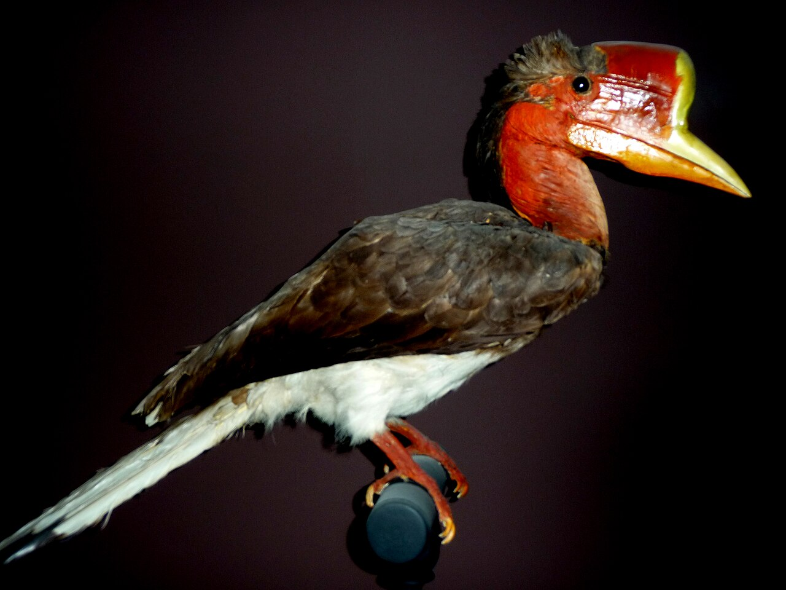

internetové encyklopedii, kterou může upravovat každý.
Česká Wikipedie má nyní 556 386 článků.
Zoborožec štítnatý (Rhinoplax vigil) je pták z čeledi zoborožcovití (Bucerotidae), jediný druh rodu Rhinoplax. Vyskytuje se v orientální oblasti, a sice od myanmarského Tenasserimu přes Malajský poloostrov až po Borneo a Sumatru. K životu vyžaduje rozsáhlé porosty původních lesů, typicky s převahou dipterokarpů.
Zoborožec štítnatý je největším asijským zoborožcem a nezaměnitelným zástupcem celé čeledi. Dosahuje velikosti až 120 cm, vyniká dlouhými ocasními pery a silně zvrásněnou kůží na krku, jež je u samců červená, zatímco u samic modrá. Ze svrchní poloviny zobáku vyrůstá výrazná přilbice, jež tvoří až přes desetinu váhy dospělce. Přilbice mohou tito ptáci využívat k efektním soubojům, při nichž se vzájemně srážejí ve vzduchu. Zoborožec štítnatý patří mezi potravně nejvíce specializované zoborožcovité, drtivou část jeho jídelníčku tvoří plody fíkovníků. Jde o monogamní druh, přičemž k hnízdění využívá přirozené dutiny vzrostlých stromů. Samice se v dutině doslova zazdí pomocí výkalů či bahna, zatímco samec jí a později i mláděti poskytuje potravu. Zoborožci štítnatí představují jedny z výrazných K-stratégů mezi ptáky: doba hnízdění často přesahuje 160 dní, dalších šest měsíců navíc rodiče připravují své mládě na nezávislost.
Přilbice zoborožců svou strukturou představují alternativu slonoviny a jsou vhodné k vyřezávání dekoračních předmětů, které jsou ceněny již stovky let. Ilegální lov, probíhající v masovém měřítku od 90. let 20. století, společně se ztrátou přirozeného prostředí však vedly k rapidnímu poklesu populací. Zoborožec štítnatý je od roku 2015 považován za kriticky ohrožený druh.
Ženské ruce šijící podomácku vyrobenou obličejovou roušku během pandemie covidu-19 v Česku.
Nejlepší obrázky. Další obrázky týdne…